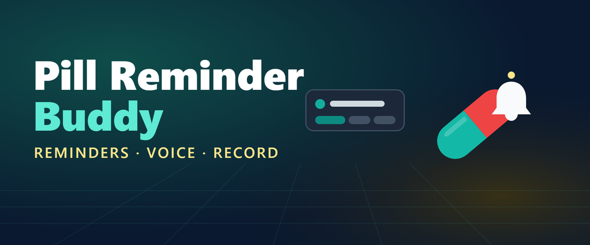
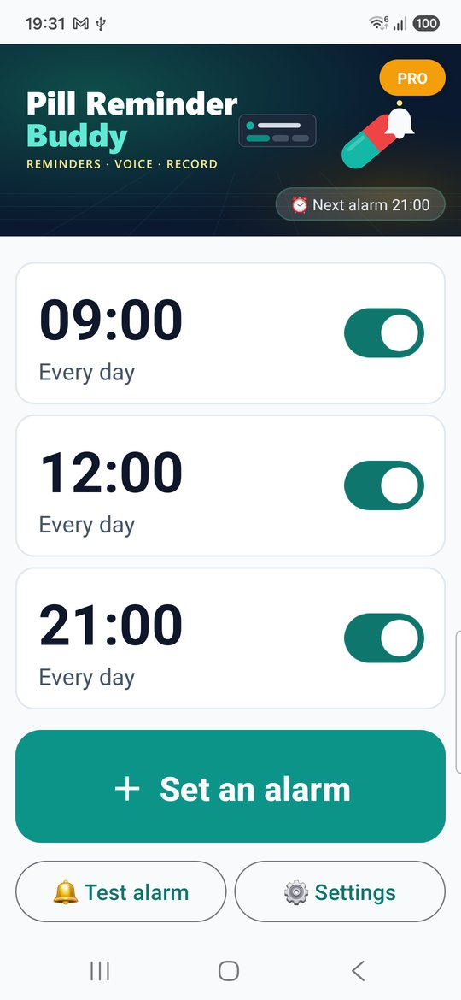
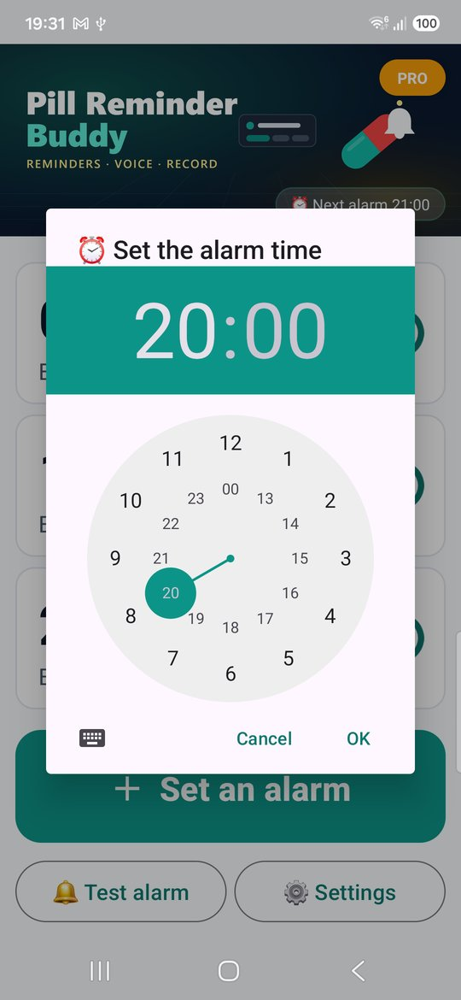
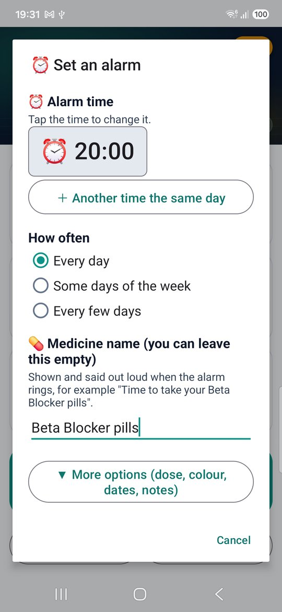
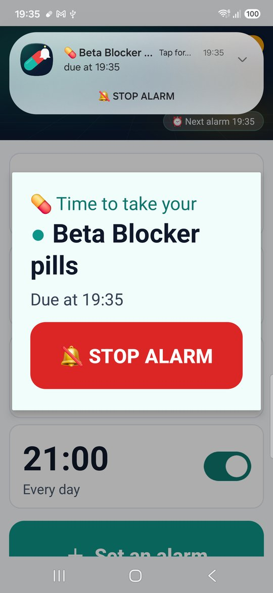
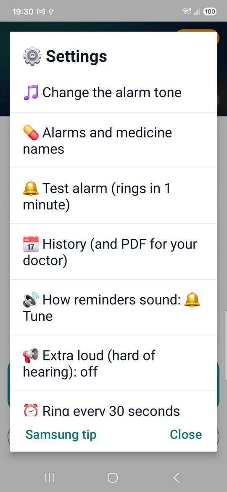

Everything below is the same text as the Manual in the app (⚙️ Settings › Manual).
Pill Reminder Buddy is an alarm for your medicines. At the times you set, it rings like an alarm clock, shows "Time to take your" and the medicine's name, and can say it out loud.
It is a reminder. It doesn't give medical advice and doesn't check medicines against each other. Always follow your doctor's or pharmacist's instructions and the leaflet that came with your medicine. If you miss a dose, the leaflet or your pharmacist will tell you what to do.
Medicine names are not on the main screen. They show when the alarm rings, and in ⚙️ Settings › Alarms and medicine names.
Tap ＋ Set an alarm. The clock comes up: pick the time and tap OK. Then:
Then tap the big ✅ Save alarm.
Free has up to 3 alarms. The 3 alarms the app starts with count, so change their times to suit you. ⭐ Pro has as many as you need.
The screen turns on and the alarm rings like an alarm clock, at alarm volume. The first ring lasts about 1 minute.
When an alarm rings, the phone wakes up and shows a big 🔕 STOP ALARM screen, also on the lock screen: no PIN is needed, and the phone stays locked. The volume buttons also stop the alarm.
The big screen says "Time to take your …" with the medicine's name and one very big red 🔕 STOP ALARM button. If it doesn't open by itself, tap the alarm: the sound stops and the big screen opens. The alarm itself also has a 🔕 STOP ALARM button.
⏰ Ring every 30 seconds until stopped (on unless you switch it off in ⚙️ Settings): after the first minute the alarm rings again every 30 seconds, almost without a break, until you tap STOP ALARM or tap the alarm. It stops by itself about 2 minutes after the first ring. (Swiping the alarm away stops the next rings, but the ring that is playing finishes first.)
On the lock screen the alarm says "Time for your medicine" without the name, unless you switch on medicine names on the lock screen (⚙️ Settings). How much shows on the lock screen also depends on the phone's own lock screen settings.
⭐ Pro: Remind again later rings again every few minutes (up to 3 times) if the alarm wasn't stopped.
⏰ The alarm tone is Pill Reminder Buddy's own loud alarm-clock beep, built into the app, unless you choose another. 🎵 ⚙️ Settings › Change the alarm tone lists it first, then the phone's default alarm tone and the phone's alarm tones and ringtones. Tap one: it plays for a few seconds and becomes your alarm tone (✅ shows the one in use).
🔊 ⚙️ Settings › How reminders sound:
The voice is the phone's own text-to-speech voice and plays at alarm volume. Choosing a voice option plays a sample.
📢 Extra loud (⚙️ Settings, for the hard of hearing): each ring turns the phone's alarm volume to full, and afterwards puts the volume back as it was. Silent stays silent.
🔔 Test alarm (on the main screen and in ⚙️ Settings) sets a real alarm for 1 minute later, the same way as your medicine alarms. The phone also says out loud when the test alarm will ring and when your next medicine alarm is. Lock the phone and wait: the test alarm shows the time it was set and the time it rang.
⚙️ Settings › History shows every alarm day by day: when it was due, when it rang and when it was stopped.
"Not marked" means nobody ticked that dose as taken. It doesn't show whether the dose was taken. If you want, tap a dose to mark it ✅ taken or ⏭️ skipped (you don't have to). The record shows the time you changed it.
Free shows the last 7 days. ⭐ Pro shows all of it (it's all kept on the phone), and shares it as a PDF for your doctor or pharmacist, or as a CSV for Excel or Google Sheets. ⚙️ Settings › Name at the top of the PDF puts a name at the top of the PDF (optional).
Your alarms and history stay on this phone and aren't copied to Google's backup or a new phone. ⚙️ Settings › Save a backup file saves everything into one file you keep (for example on Google Drive). On a new phone, install Pill Reminder Buddy and use Restore from a backup file. Restoring replaces what is on the phone.
Free: up to 3 alarms, the alarm tone or voice, the big STOP ALARM, Extra loud, the test alarm and the last 7 days of history.
Pro (one payment, no subscription): as many alarms as you need, Remind again later, the full history with PDF and CSV, and backup.
Tap GO PRO at the top. Restore purchase gets Pro back on a new phone with the same Google account.
No account and no sign-in. Your alarms and history are kept only in the app's own storage on this phone. Pill Reminder Buddy has no servers. A PDF, CSV or backup file only leaves the phone when you share or save it yourself.
Google Play handles the Pro purchase.
Pill Reminder Buddy v1.0 (Build 1)
Publisher: AppStack Studio
| Question | Typical pill reminder apps | Pill Reminder Buddy |
|---|---|---|
| Easy to read? | Small text, many screens | One main screen: big, bold alarm times with an on/off switch |
| Hard to miss? | A short notification sound | A loud alarm-clock beep at alarm volume: about 1 minute, then every 30 seconds until you stop it (2 minutes) |
| Which medicine? | Read it on the screen | Optional voice: "Time to take your Beta Blocker pills" |
| Stopping the alarm | Small buttons | One very big red STOP ALARM button |
| Account and data | Often a sign-in and cloud sync | No sign-in: everything stays on your phone |
| Price | Often a monthly subscription | Free for up to 3 alarms; Pro is one payment for life (no subscription) |

1. Your alarms
Big times, the days, and an on/off switch for each.

2. Set an alarm
Pick the time on the clock and tap OK.

3. Medicine name (optional)
Shown and said out loud when the alarm rings.

4. When it rings
The medicine's name and one big red STOP ALARM button.

5. Settings
Alarm tone, voice, Extra loud and more, in big text.
Screenshots: Pill Reminder Buddy 1.0 on a Samsung Galaxy S24, with example alarms set up for the screenshots.